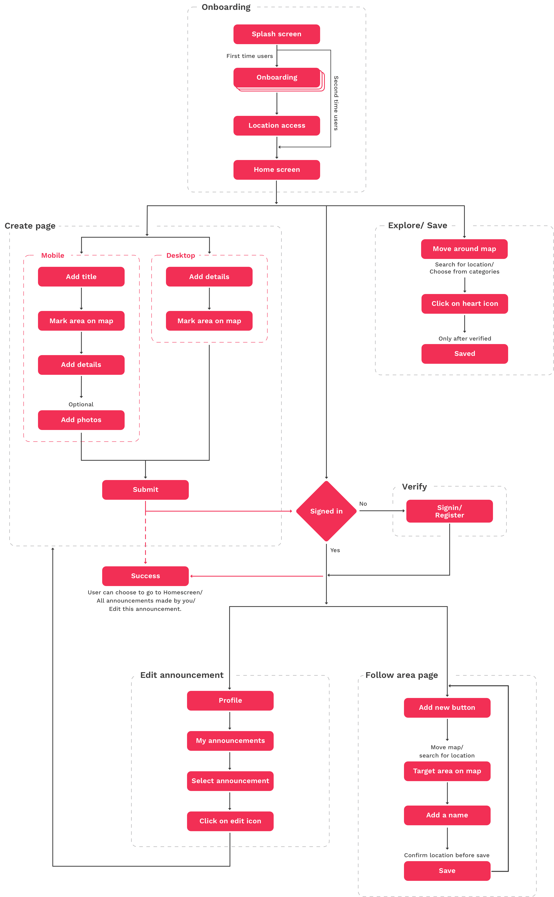
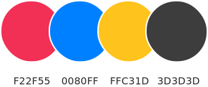

Announce.Today | Web & Mobile App
Announce.today is a cross-platform application where users can create and view announcements in a specific area. Users can also explore a location and follow the area to get notified of new announcements.
Getting started
When I first joined Milkieway Inc., the foundation for Announce—a comprehensive platform designed to streamline communication—was already in place. However, the product lacked a cohesive user experience that could bring it to life across Web, iOS, and Android platforms. My challenge was to take this foundation and design an intuitive, seamless end-to-end interface that would engage users on all three platforms. From creating high-fidelity mockups to interactive prototypes, my goal was to craft an experience that felt natural and easy to navigate, no matter the device.
Problem statement

Have you ever lost something and wished you could quickly spread the word? Or missed an important public announcement because it reached you too late? Whether it's an event in your neighborhood or a critical update, traditional methods like megaphones, flyers, or posters are often inefficient, labor-intensive, and unreliable. There's no guarantee the right message will reach the right people at the right time.
Announce.today was developed to solve these challenges. It enables users to create and broadcast hyper-localized announcements, ensuring timely and targeted communication within specific areas, without the inefficiencies of traditional methods.
Design process
- Conducted competitive analysis to identify market gaps and opportunities.
- Researched the latest UX/UI trends to ensure a modern and user-friendly design.
- Reviewed existing UI guidelines and platform standards to maintain consistency.
- Gathered and analyzed user requirements to align with the business goals.
- Created detailed user personas to understand the target audience.
- Mapped out key use cases and scenarios to ensure coverage of core functionalities.
- Developed low-fidelity wireframes to visualize the app’s structure and flow.
- Designed high-fidelity mockups with a focus on usability and aesthetic appeal.
- Created interactive prototypes to demonstrate key interactions and user flows.
- Established a style guide to ensure consistency across platforms and future scalability.
- Conducted usability testing with real users to gather actionable feedback.
- Identified pain points and areas for improvement based on testing results.
- Refined designs for optimal user experience and exported assets for development.
User research
Project Goal
The aim of this project was to design a user interface (UI) that supports diverse functionalities, enabling users to create announcements easily across multiple platforms. The design needed to simplify the user flow for creating announcements, incorporate dynamic map tools with educational support, and ensure a seamless experience for users.
Users' Goal
Through research and user testing, we identified that users wanted a streamlined way to:
- Reach their audience in specific locations.
- Receive notifications about activities in areas of interest.
- Easily create and manage announcements, including setting time limits for visibility.
Target Users
Announce.today serves a broad audience, including:
- Individuals who need to make local announcements, like lost pet notifications or store openings.
- People who want to stay informed about local events, deals, or important happenings.
- Users who never want to miss an important announcement within their community.
User flow
Visual identity
When I joined the project, the existing logo featured a globe with the letter "A" embedded, but it lacked a sense of elegance and connection with the product's purpose. I was tasked with redesigning the logo to align more closely with Announce.today’s brand identity.
I began by iterating on the original concept, starting with subtle modifications to enhance the visual appeal. After discussions with the team and creative director, we explored incorporating a megaphone into the logo to represent announcements clearly and intuitively.
Through multiple design iterations, we finalized a logo that effectively captures the platform's purpose, with a bold "A" integrated into a megaphone icon, symbolizing the act of broadcasting announcements. This final design resonates with the platform’s mission of connecting users through relevant, local information.
LogoType

Design system
I have examined the competitors in the market and started from the atomic level of the UI design. All the icons and UI elements that I have created are responsive. We chose the typography for the product according to the supported font faces of the system.
Color palette
Iconography

Placeholder images
While creating an announcement, users can upload images to that. But, when the user thinks not to upload any Pictures, the content looks empty in the product. So I created some custom-made placeholders that show up as the default image when the user didn't upload any image.


Final UI screens
Onboarding screens
Onboarding for Announce explains the usability of the product with some clean graphics, which I have created. System permissions are requested when the user continues.


Home screen
On the home screen, the user sees the announcement in card format along with a map to show where it has been made. The announcement in view will be highlighted in red color.

Follow Area
Follow area allows users to follow a particular area with a name and they will be notified when a new announcement is made in that area.


Create
Creating an announcement is simplified to 4 step process, 1 - add title, 2 - mark area( Users can draw on the map where they want to make an announcement ), 3 - add details, 4 - upload images (optional).


Saved
Save the announcement while exploring and you can revisit it anytime by going into the saved section.

Web experience
Announce web has a different approach in interaction with the map. To view where the announcement was made, users can click on navigate button on the announcement card.

App promo
I have created few commercial videos for Announce by combining all the prototypes that I made. This video shows the usability of the product and helps to promote Announce.
Challenges
The main challenge I faced was to design a product that doesn’t need to have user education. The main feature of the application is to mark the area on the map while creating an announcement, this was even more challenging when there are no competitors in the market. As it was my first UI/UX project I learned a lot during the time being.
Result
The resulting product was a fully designed and interactive app that users can create and view announcements in a location. I have been closely working with the development team to export assets required for different platforms.